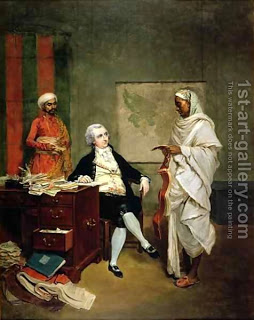

Shevuot (Oaths) 34 - Why Can Oath of Testimony Be Only About Money?
Here are three (of five) explanations why this is so.
Rabbi Eliezer:
In the verse about the oath of testimony , the word "or" is stated two times, and in the verse about the oath of deposit the word "or" is also stated two times. This establishes the connection between the two, and just as oath of deposits speaks only of a monetary claims, so too the oath of testimony speaks only of a monetary claim.
Rabbi Akiva:
In the phrase, " When one shall become guilty in regard to one of these matters ," the word "of" is a limitation, meaning that there are cases when one is liable and cases when one is not, and when is he liable? - in money matters!
Rabbi Yose HaGlili:
"... and he is a witness who either saw or knew ." Which testimony can be established by either seeing or knowing alone? - in money matters!
Art: Thomas Hickey - John Mowbray with his money agent